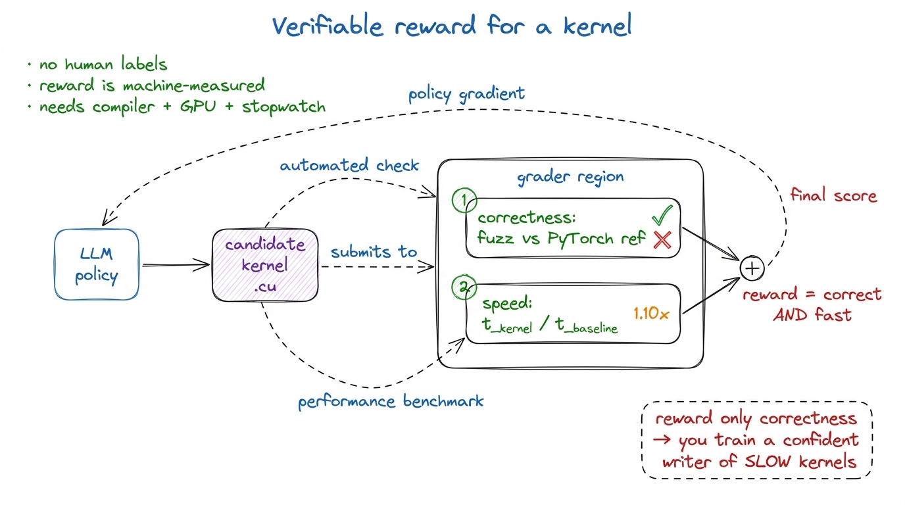
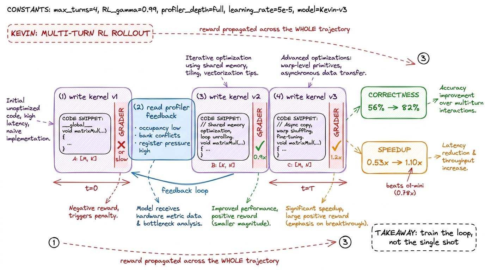
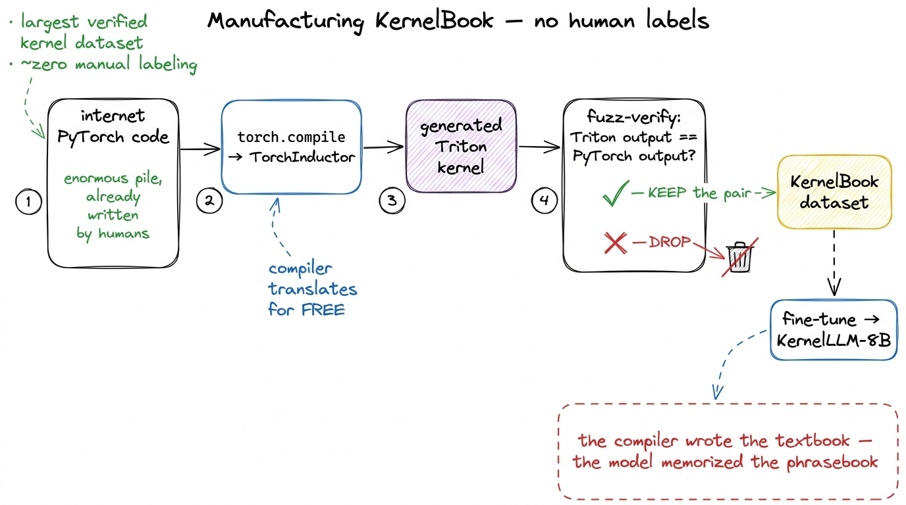

Kevin, RL & what's still human
Everything else on this site is a human climbing the GEMM ladder by hand: state a hypothesis, write the smallest kernel that tests it, read the profiler, let the bottleneck pick the next move. It is slow, and it is exactly the kind of loop that looks automatable. So the obvious question, the one a hiring manager will ask you in 2026, is: can a model just do this? Can you point a language model at "make this matmul faster on an H100" and get back something that beats what you would have written?
The honest answer, after a year of very serious attempts, is partly — and the shape of the "partly" is the interesting part. This article walks through the two results that moved the field, the leaderboard that made them measurable, and the specific wall everyone keeps hitting. Then I want to be precise about what is still, stubbornly, a human job.1 The framing and most of the numbers here come from Simon Guo's "Automated GPU Kernel Generation" (Oct 2025) and the GPU MODE lecture series. This is a survey article, not a worklog — I did not train any of these models. But the loop they use is the same predict-measure-repeat loop the rest of the site is built on.
Why kernels are a good RL problem
Most of what we ask language models to do has no crisp reward. "Write a good essay" is a matter of taste. But a GPU kernel has two properties that a taste-free grader loves. First, correctness is checkable: run the kernel and fuzz-compare its output against a reference PyTorch implementation across many random input tensors within a tolerance, and you get a hard pass/fail — a kernel that passes one lucky input and fails the rest scores zero. Second, speed is a number: time the kernel, divide by the runtime of the baseline, and you get a speedup like 1.10x that is not up for debate.
That is a verifiable reward — the holy grail for reinforcement learning, because you can generate reward signal automatically, at scale, without a human in the loop. You do not need labeled data. You need a compiler, a GPU, and a stopwatch. The reward is just correct AND fast, and both halves are machine-measurable.
The trap is to reward only correctness. A model optimized purely for "does it pass" learns the safest possible behavior: emit something that obviously works and is obviously slow. You have to reward the speedup too, or you train a very confident writer of naive kernels — the 1.3%-of-cuBLAS variety we started the GEMM ladder with.

figure rendering · A kernel is a rare thing in ML: a task with a reward you can compute aKevin: multi-turn RL, and why "multi-turn" is the whole trick
The first result worth internalizing is Kevin, an RL-trained model built on QwQ-32B — a 32-billion-parameter reasoning model from the Qwen family — as its base policy. The point of Kevin is not the base model but the training recipe layered on top. The insight in its name is that kernel writing is inherently iterative. No human writes the warptiled kernel in one shot. You write a version, profile it, see it is bank-conflicted or occupancy-limited, and revise. So training the model over a single turn — one prompt, one kernel, one reward — throws away the part of the task that actually contains the skill.
Kevin trains multi-turn: the model writes a kernel, gets the correctness result and the profiling feedback back as new context, and writes a better one, across several rounds, with the reward propagated back through the whole trajectory. It is optimizing not "write a good kernel" but "run a good optimization loop." That is a much closer match to what the job actually is.
The numbers are the reason people paid attention. On the correctness axis, Kevin took the base QwQ-32B from 56% to 82% correct on the benchmark tasks. On the axis that matters more, mean speedup over PyTorch eager went from 0.53x to 1.10x.2 Read 0.53x carefully — it means the starting model's kernels were, on average, roughly half the speed of just calling PyTorch. The naive attempt at a hand-rolled kernel is usually slower than the library, which is the whole reason the ladder exists. Crossing 1.0x means the trained model, on average, finally beats the thing it was trying to replace. Crossing 1.0x is the milestone: it means the average generated kernel is finally faster than the PyTorch baseline rather than a slower reimplementation of it.
And it beat a frontier model at the task. On mean speedup, Kevin's 1.10x came in ahead of OpenAI o1-mini at 0.78x — a 32B open model, specialized by RL on a verifiable reward, outrunning a much larger general reasoning model on this specific job. That is the headline the field took away: for a task with a clean reward, targeted RL beats scale. The specialist with a stopwatch wins.

figure rendering · Kevin trains the optimization loop itself: write, profile, revise, witKernelBook: the other way to get signal is to manufacture data
Kevin attacks the problem from the reward side. The second result attacks it from the data side — and the trick is genuinely clever because it needs no human-written kernels at all.
Here is the observation. torch.compile, through its TorchInductor backend, will take any valid PyTorch program and emit a Triton kernel for it. That is a compiler doing the translation for free. So if you have a large pile of PyTorch code — and the internet has an enormous pile of PyTorch code — you can run each snippet through torch.compile, capture the Triton it produces, verify that the Triton actually matches the original PyTorch numerically, and keep the pairs that pass.
The output is KernelBook: the largest verified kernel dataset generated from internet PyTorch code, built with essentially zero manual labeling. The verification step is what makes it "verified" rather than "scraped" — a generated Triton kernel is only added if it fuzz-passes against the PyTorch program it came from, the same discipline as Kevin's reward applied to dataset construction instead of RL. Fine-tuning on it produces KernelLLM-8B, an 8-billion-parameter model that is the first known post-trained approach on this data and shows a clear jump on the Triton slice of the benchmark.
The thing to notice is that an 8B model gets meaningfully good here. That is not because 8B is enough parameters to reason about a warp schedule; it is because the data taught it the local grammar of good Triton — the tile shapes, the tl.load/tl.store idioms, the block-pointer patterns — and most everyday kernels are close to something in that distribution. The compiler wrote the textbook; the model memorized the phrasebook.
GPU MODE: the leaderboard that made all of this measurable
None of the above is trustworthy without a shared scoreboard, and that is what GPU MODE provides. Since February 2025 its leaderboard has taken in more than 60,000 submissions from around the world, across five competitions with prize pools in the hundreds of thousands of dollars.3 The prize pools include a $100k AMD DeepSeek kernel challenge and a $100k AMD distributed-kernel challenge — which is why a nontrivial fraction of those 60k submissions target AMD MI300 hardware, not just NVIDIA. Cross-vendor is becoming a first-class concern, not a footnote.
Sixty thousand submissions is not just a vanity number. It is the test harness for the whole automated-kernel program. Every claim — Kevin's 1.10x, KernelLLM's Triton jump — is only as good as the benchmark it is measured on, and a public leaderboard with real GPUs, real timing, and thousands of human and machine competitors is the closest thing the field has to ground truth. This is the same principle as the three regimes predict-then-measure loop, scaled to a community: you do not get to claim a speedup, you get to submit one and let the clock decide.
The wall: intrinsics and the DSL data desert
So why is the answer "partly" and not "yes"? Two reasons, and they are both about data.
The first is hardware-specific intrinsics. The models can write plausible, correct, mid-tier kernels. Where they fall down is exactly where the performance actually lives: the Tensor Core. Getting real throughput on modern GPUs means emitting the right wgmma or mma instructions, feeding them the right fragment layouts, managing the async copy pipeline — the Hopper-specific sm_90a machinery like TMA and thread-block clusters that we cover elsewhere on this site. This is where most of the FLOP/s are, and it is precisely the part models are worst at, because it is the part that appears least often in any training corpus.4 This is also why the automated results tend to plateau well below cuBLAS. Getting from a clean 1.1x-over-eager kernel to the last few percent of a hand-tuned library is almost entirely a Tensor-Core-intrinsics problem — and that is the region of the skill the models have seen the least of.
Which brings the second, deeper reason: the training data barely contains kernels at all. CUDA code is about 0.073% of The Stack v1.2, a standard open code corpus. Frontier models simply have not seen enough GPU programming to be fluent in it — the distribution is starved. And the newer, higher-performance domain-specific languages (DSLs) — Triton, and the wave of tile-based languages after it — are rarer still than CUDA in that data. The exact tools that make kernels tractable for humans are the ones models have seen least.

figure rendering · The performance-critical code — Tensor Core intrinsics, tile DSLs — isWhat is still human
Put the two results together and a clean picture emerges. RL with a verifiable reward (Kevin) can teach a model to run the optimization loop. Compiler-manufactured data (KernelBook) can teach a model the grammar of decent kernels. A public leaderboard (GPU MODE) can tell you, honestly, how far that gets you. And the answer is: past the PyTorch baseline, reliably; up to the last mile of Tensor-Core performance, not yet.
The last mile is where the human still lives, and it is worth being specific about why. It is not that a human is smarter than the model in some general sense. It is that the last mile is the part with the least data, the most hardware specificity, and the tightest coupling to a profiler trace that has to be read, not just measured. Reading a ncu report and knowing that a 4%-of-peak number means "you are memory-bound, go stage tiles in shared memory" — that inference from evidence to next move is exactly the skill this whole site is trying to build, and it is exactly what the models are shortest on.
So the shape of the real workflow is not "AI replaces the kernel engineer." It is a loop with three participants: a human who frames the problem and reads the profile, an AI that proposes and iterates far faster than a person can type, and a profiler that supplies the ground-truth reward to both.5 Stanford is piloting a kernels course where students are encouraged to use AI agents in the loop — not banned from them. That is the tell: the field already treats the agent as a power tool for a human engineer, not a replacement for one. The human sets the hypothesis, the agent explores the space, the profiler adjudicates, and the reward flows back to whichever participant needs correcting.
If that structure sounds familiar, it should. It is a harness — the same pattern as an agentic coding harness, just with a GPU clock as the reward function instead of a test suite. The model is the policy, the profiler is the environment, the human is the one who decides what "faster" is even supposed to mean for this workload. Automated kernel generation did not remove the engineer from the loop. It gave the engineer a very fast, slightly reckless collaborator, and a scoreboard honest enough to keep both of them accountable to the same number.
The rest of this site is that harness, run by hand, one measured kernel at a time — so that when you sit down inside the loop with an agent, you are the participant who can actually read the profile.